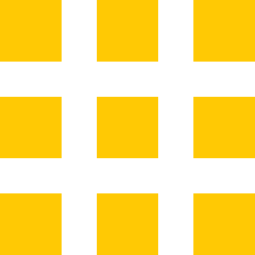

<main role="main" id="joinusmain">
	<div class="container join-us-pg-container">
         <!-- main content -->
        <div id="title">
            <h1 class="join-us">Job Description</h1>
            <hr class="gold gold-about">
        </div>

            <div class="row join-us-row">
                <div class="col-lg-12 join-us-pg-col">
                    <h2 class="applying">How Do I Apply to be a Techranger?</h2>
                    <p class="join-par">If you would like to join our team, make sure you have a resume and an updated portfolio showing any relavant projects. Once you're ready, <a href="https://jobs.cdl.ucf.edu/jobs/" class="app-link" target="_blank">click here to apply</a>. Applications will be accepted until all positions are filled. The top applicants will be invited to a group interview. Hired Techrangers will need to be available to begin work immediately for a one year minimum. All Techrangers are required to work between 15 to 20 hours a week, and must be currently enrolled as students at UCF.</p>

                    <p class="join-par email-us">If you have any questions, <a href="mailto:techrangers@ucf.edu" class="app-link"> email us</a>.</p>
                </div>
            </div>

            <hr class="divider">

            <div class="row join-us-pg-row">
                <div class=" col-lg-12 join-us-pg-col">
                    <h2 class="applying">What are the benefits of being a Techranger?</h2>
                </div>
            </div>

            <div class="row join-us-row">
                <div class="col-lg-12 join-us-pg-col benefits">
                    <ul>
                        <li>Flexible Hours</li>
                        <li>On-campus location</li>
                        <li>Learning environment</li>
                        <li>Real-world experience</li>
                        <li>Opportunity to explore other interest areas</li>
                        <li>Networking</li>
                        <li>Leadership Opportunities</li>
                    </ul>
                </div>
            </div>

             <div class="row join-us-pg-row">
                <div class=" col-lg-12 join-us-pg-col">
                    <h2 class="applying bottom">What skills do I need to be a Techranger?</h2>
                    <p class="skills-par bottom">All Techrangers should possess the following qualities and skills:</p>
                </div>
            </div>

            <div class="row join-us-row">
                <div class="col-lg-12 join-us-pg-col benefits">
                    <h3 class="core-skills">Core Skills</h3>
                        <ul class="core-ul">
                            <li>Intermediate to advanced XHTML knowledge</li>
                            <li>Intermediate CSS knowledge</li>
                            <li>Basic programming knowledge</li>
                            <li>Basic JavaScript knowledge</li>
                            <li>Basic web graphics experience</li>
                            <li>Windows OS</li>
                        </ul>

                    <h3>Professional Skills</h3>
                        <ul>
                            <li>Team player</li>
                            <li>Verbal and Written Communication</li>
                            <li>Eagerness to Learn</li>
                            <li>Initiative</li>
                            <li>Presentational</li>
                            <li>Organizational</li>
                            <li>Leadership</li>
                            <li>Time Management</li>
                            <li>Problem Solving</li>
                            <li>Sense of Humor</li>
                            <li>Creativity</li>
                            <li>Patience</li>
                        </ul>

                    <h3>Technical Skills</h3>
                    <p>Knowledge of one or more of the following is a plus:</p>
                        <ul>
                            <li>Javascript/jQuery</li>
                            <li>MySQL</li>
                            <li>PHP</li>
                            <li>Python</li>
                            <li>Dreamweaver</li>
                            <li>Graphic Design</li>
                            <li>User Centered Design</li>
                            <li>Accessibility</li>
                            <li>Browsers
                                <ul>
                                    <li>Opera</li>
                                    <li>Safari</li>
                                    <li>Internet Explorer</li>
                                    <li>Firefox</li>
                                </ul>
                            </li>
                            <li>Operating Systems
                                <ul>
                                    <li>Linux</li>
                                    <li>Mac OS</li>
                                    <li>Windows</li>
                                </ul>
                            </li>
                        </ul>      
                </div>
            </div>
    </div>
</main>
